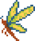
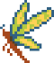

Maquetación en formato libro de los textos escritos del podcast de terror The Magnus Archives. Este proyecto personal mezcla mi pasión por el terror y la narrativa con el diseño editorial, buscando trasladar la atmósfera opresiva del audio al papel mediante una tipografía cuidada y un lenguaje visual que respete la esencia de los archivos originales.

Ermes Olea
Madrid, España | sandrune.art
Porfolio 2025/2026